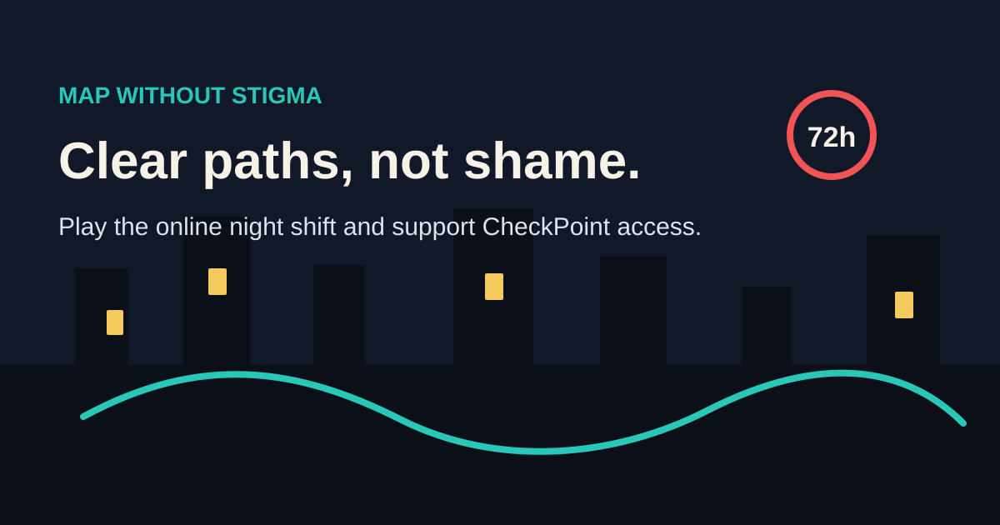

Hook
What happens after sex when the system is unclear?
Press kit
Use this page as the public media starter. Add contact details only after campaign privacy settings are ready.
Map Without Stigma is a searchable public-health website and short browser game about post-sex uncertainty, testing, PrEP, PEP and the need for a connected CheckPoint network in Croatia.

What happens after sex when the system is unclear?
People need calm routes, not shame.
Support a national CheckPoint network without stigma.